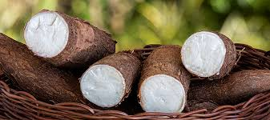
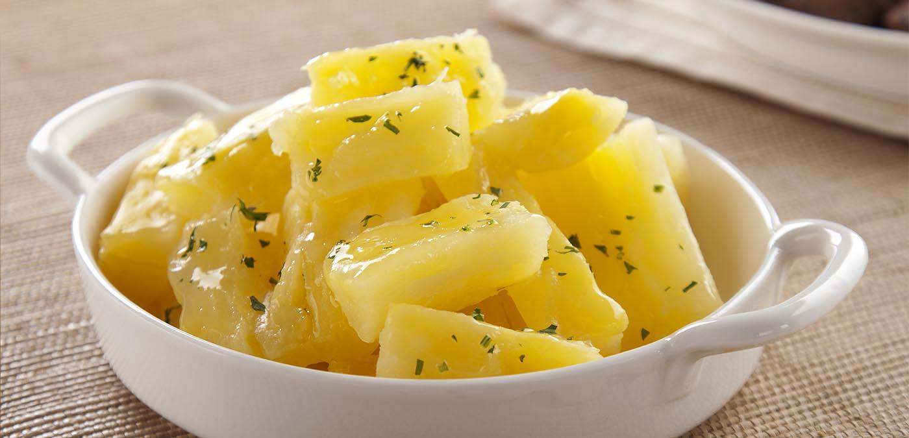
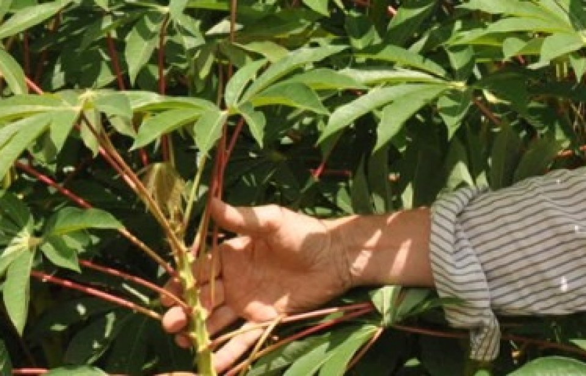
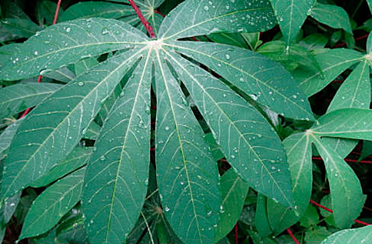

A Mandioca
Nome científico: Manihot esculenta
Família: Euphorbiaceae
Nomes populares: Mandioca, aipim, macaxeira
Origem: América do Sul, especialmente Brasil
Importância: Rico em carboidratos, é alimento base em diversas culturas e sua produção é essencial para a segurança alimentar.
A mandioca é uma planta nativa da América do Sul, amplamente cultivada em regiões tropicais e subtropicais. É uma fonte importante de carboidratos e é utilizada em diversas preparações culinárias.
O Cultivo da Mandioca
O solo deve ser bem drenado e descompactado. O plantio é feito com manivas em sulcos ou covas de 10 cm. A adubação exige nutrientes específicos como calcário e fertilizantes. Cuidados incluem controle de pragas, irrigação e monitoramento.

O Preparo: Raiz
- Cozida: Cozida em agua com sal ate ficar macia
- Frita: Cozida, cortada e frita ate dourar
- Purê: Cozida e amassada com manteiga ou azeite.
A raiz da mandioca pode ser consumida cozida, frita ou assada. É importante cozinhar bem a raiz para eliminar substâncias tóxicas presentes em algumas variedades.
O Preparo: Ramas
As ramas da mandioca podem ser utilizadas em saladas, refogados ou como acompanhamento. Elas são ricas em fibras e nutrientes.
O Preparo: Folhas
- Refogada: Cozidas com temperos, servidas como acompanhamento.
- Sopa: Acrescentadas em sopas para sabor e nutrientes.
As folhas da mandioca são comestíveis e podem ser utilizadas em sopas, refogados ou como recheio. Elas são ricas em proteínas e vitaminas.
